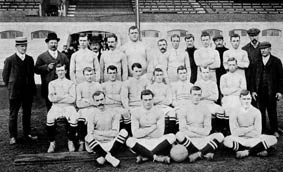
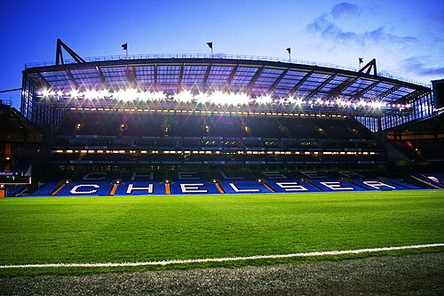
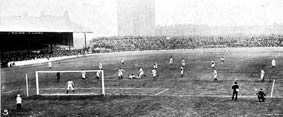
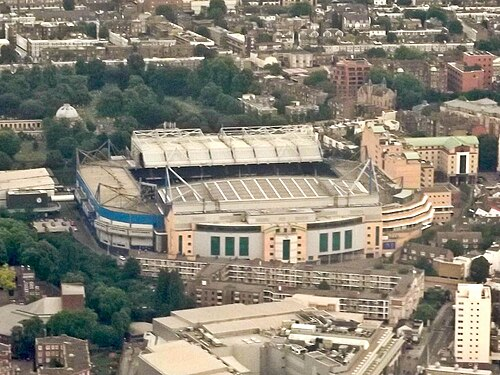

F.C. Chealsea
Chelsea Football Club is a professional football club based in London, England. The club was founded in 1905 and named after neighbouring area Chelsea. They compete in the Premier League, the top tier of English football, playing their home games at Stamford Bridge. Since 2022, the club has been owned by BlueCo.
Chelsea won their first major domestic trophy, the First Division championship, in 1955. They won their first Premier League title in the 2004–05 season. In total, Chelsea have won six top-flight league titles. They have also won eight FA Cups, five League Cups, and four FA Community Shields, making them the fifth-most successful club in English football.
At international level, Chelsea won their first European trophy in 1971, lifting the Cup Winners' Cup, which they won again in 1998. They went on to win their first UEFA Champions League title in 2012 and repeated the feat in 2021. Chelsea have won the UEFA Europa League twice, in 2013 and 2019. After winning the UEFA Conference League in 2025, Chelsea became the first club to win all four main UEFA competitions, as well as all UEFA Men's competitions.[1][2]. They also won the FIFA Club World Cup in 2021 and 2025, the latter being the contest's first iteration with 32 teams.
Chelsea have rivalries with fellow London teams Arsenal, Tottenham Hotspur, Fulham, and also with Leeds United.
Founding and early years (1905–1952)
In 1904, Gus Mears acquired the Stamford Bridge athletics stadium in Fulham with the aim of turning it into a football ground. An offer to lease it to nearby Fulham F.C. was turned down, so Mears opted to found his own club to use the stadium. As there was already a team named Fulham in the borough, the name of the adjacent borough of Chelsea was chosen for the new club; names like Kensington FC, Stamford Bridge FC and London FC were considered. Chelsea F.C. was founded on 10 March 1905 at The Rising Sun pub (now The Butcher's Hook), opposite the present-day main entrance to the ground on Fulham Road, and were elected to the Football League shortly afterwards.
 Chelsea won promotion to the First Division in their second season, and yo-yoed between the First and Second Divisions in its early years. The team reached the 1915 FA Cup final, where they lost to Sheffield United at Old Trafford, and finished third in the First Division in 1920, the club's best league campaign to that point. Chelsea had a reputation for signing star players and attracted large crowds. The club had the highest average attendance in English football in ten separate seasons including 1907–08, 1909–10, 1911–12, 1912–13, 1913–14 and 1919–20. They were FA Cup semi-finalists in 1920 and 1932 and remained in the First Division throughout the 1930s, but success eluded the club in the inter-war years.
Modernisation and the first league championship (1952–1983)
Former Arsenal and England centre-forward Ted Drake was appointed manager in 1952 and proceeded to modernise the club. He removed the club's Chelsea pensioner crest, improved the youth set-up and training regime, rebuilt the side with shrewd signings from the lower divisions and amateur leagues, and led Chelsea to their first major trophy success – the League championship – in 1954–55. The following season saw UEFA create the European Champions' Cup, but after objections from The Football League, Chelsea were persuaded to withdraw from the competition before it started.[18][19] Chelsea failed to build on this success, and spent the remainder of the 1950s in mid-table. Drake was dismissed in 1961 and replaced by player-coach Tommy Docherty.
Docherty built a new team around the group of talented young players emerging from the club's youth set-up, and Chelsea challenged for honours throughout the 1960s, enduring several near-misses. They were on course for a treble of League, FA Cup and League Cup going into the final stages of the 1964–65 season, winning the League Cup but faltering late on in the other two.[20] In three seasons the side were beaten in three major semi-finals and were FA Cup runners-up. Under Docherty's successor, Dave Sexton, Chelsea won the FA Cup in 1970, beating Leeds United 2–1 in a final replay. The following year, Chelsea took their first European honour, a UEFA Cup Winners' Cup triumph, with another replayed win, this time over Real Madrid in Athens.
Redevelopment and financial crisis (1983–2003)
The late 1970s through to the '80s was a turbulent period for Chelsea. An ambitious redevelopment of Stamford Bridge threatened the financial stability of the club,[21] star players were sold and the team were relegated. Further problems were caused by a notorious hooligan element among the support, which was to plague the club throughout the decade.[22] In 1982, at the nadir of their fortunes, Chelsea were acquired by Ken Bates from Mears' great-nephew Brian Mears, for the nominal sum of £1. Bates bought a controlling stake in the club and floated Chelsea on the AIM stock exchange in March 1996[23] although by now the Stamford Bridge freehold had been sold to property developers, meaning the club faced losing their home.[24] On the pitch, the team had fared little better, coming close to relegation to the Third Division for the first time, but in 1983 manager John Neal put together an impressive new team for minimal outlay. Chelsea won the Second Division title in 1983–84 and established themselves in the top division with two top-six finishes, before being relegated again in 1988. The club bounced back immediately by winning the Second Division championship in 1988–89.
After a long-running legal battle, Bates reunited the stadium freehold with the club in 1992 by doing a deal with the banks of the property developers, who had been bankrupted by a market crash.[25] In the mid-1990s Chelsea fan and businessman Matthew Harding became a director and loaned the club £26 million to build the new North Stand and invest in new players.[26] Chelsea's form in the new Premier League was unconvincing, although they did reach the 1994 FA Cup final. The appointment of Ruud Gullit as player-manager in 1996 began an upturn in the team's fortunes. He added several top international players to the side and led the club to their first major honour since 1971, the FA Cup. Gullit was replaced by Gianluca Vialli, whose reign saw Chelsea win the League Cup, the UEFA Cup Winners' Cup and the UEFA Super Cup in 1998, and the FA Cup in 2000. They mounted a strong title challenge in 1998–99, finishing four points behind champions Manchester United, and made their first appearance in the UEFA Champions League. Vialli was sacked in favour of Claudio Ranieri, who guided Chelsea to the 2002 FA Cup final and Champions League qualification in 2002–03.
Abramovich ownership (2003–2022)
With the club facing an apparent financial crisis,[27] Bates unexpectedly sold Chelsea F.C. in June 2003 for £60 million.[28] In so doing, he reportedly recognised a personal profit of £17 million on the club he had bought for £1 in 1982 (his stake had been diluted to just below 30% over the years). The club's new owner was Russian oligarch and billionaire Roman Abramovich, who took on responsibility for the club's £80 million of debt, quickly paying some of it. Sergei Pugachev alleged Chelsea was bought on Putin's orders, an allegation Abramovich has denied. Bates mentioned that Abramovich was in talks to buy Manchester United and Tottenham Hotspur before he bought Chelsea in a deal sealed in a day.
Over £100 million was spent on new players, but Ranieri was unable to deliver any trophies,[31] and was replaced by José Mourinho.[32] Under Mourinho, Chelsea became the fifth English team to win back-to-back league championships since the Second World War (2004–05 and 2005–06),[33] in addition to winning an FA Cup (2007) and two League Cups (2005 and 2007). After a poor start to the 2007–08 season, Mourinho was replaced by Avram Grant,[34] who led the club to their first UEFA Champions League final, which they lost on penalties to Manchester United. The club did not turn a profit in the first nine years of Abramovich's ownership, and made record losses of £140m in June 2005.
In 2009, under caretaker manager Guus Hiddink, Chelsea won another FA Cup.[36] In 2009–10, his successor Carlo Ancelotti led them to their first Premier League and FA Cup Double, becoming the first English top-flight club to score 100 league goals in a season since 1963.[37] In 2012, Roberto Di Matteo led Chelsea to their seventh FA Cup,[38] and their first UEFA Champions League title, beating Bayern Munich 4–3 on penalties, the first London club to win the trophy.[39] The following year the club won the UEFA Europa League,[40] making them the first club to hold two major European titles simultaneously and one of five clubs to have won the three main UEFA trophies.[41] Mourinho returned as manager in 2013 and led Chelsea to League Cup success in March 2015,[42] and the Premier League title two months later.[43] Mourinho was sacked after four months of the following season after a poor start.
In November 2012, Chelsea announced a profit of £1.4 million for the year ending 30 June 2012, the first time the club had made a profit under Abramovich's ownership.[35][45] This was followed by a loss in 2013 and then their highest ever profit of £18.4 million for the year to June 2014.[46] In 2018 Chelsea announced a record after-tax profit of £62 million.
In 2017, under new coach Antonio Conte, Chelsea won their sixth English title and the following season won their eighth FA Cup.[48] In 2018 Conte was sacked after a fifth-place finish and replaced with Maurizio Sarri,[49][50] under whom Chelsea reached the League Cup final, which they lost on penalties to Manchester City[51] and won the Europa League for a second time, beating Arsenal 4–1 in the final. Sarri then left the club to become manager of Juventus and was replaced by former Chelsea player Frank Lampard.
In Lampard's first season, he guided Chelsea to fourth place in the Premier League and reached the FA Cup final, losing 2–1 to Arsenal.[53] Lampard was dismissed in January 2021 and replaced with Thomas Tuchel.
Under Tuchel, Chelsea reached the FA Cup final, losing 1–0 to Leicester City, and won their second UEFA Champions League title with a 1–0 win over Manchester City in Porto.[56] The club subsequently won the 2021 UEFA Super Cup for the second time by defeating Villarreal 6–5 in a penalty shootout, after it had ended 1–1 in Belfast after extra time,[57] and the 2021 FIFA Club World Cup (the first for the club) in Abu Dhabi after beating Brazilian Palmeiras 2–1.
On 18 April 2021, Chelsea announced it would be joining a new European Super League, a league competition comprising the biggest European clubs.[59] After a backlash from supporters, the club announced their withdrawal days later.[60] The club opted against furloughing their non-matchday staff during the COVID-19 pandemic, with the decision reportedly coming from Abramovich himself. Chelsea, one of the first clubs to help the National Health Service, lent the club-owned Millennium Hotel for the NHS staff.
Amidst financial sanctions leveled at Russian oligarchs by Western governments in response to the 2022 Russian invasion of Ukraine, Abramovich stated on 26 February that he would hand over the stewardship of Chelsea to the trustees of the Chelsea Foundation.[63] The trustees did not immediately agree, due to legal concerns regarding the rules of the Charity Commission for England and Wales.[64] A week later, Abramovich wrote-off the £1.5 billion the club owed him, and put the club up for sale, pledging to donate net proceeds from it to the victims of the war in Ukraine.
On 10 March 2022, the British government announced sanctions on Abramovich with Chelsea allowed to operate under a special license until 31 May.[67][68] In the following weeks, reports emerged of Abramovich's involvement in brokering a peace deal between Ukraine and Russia and securing safe evacuation corridors in besieged Ukrainian cities.[69][70] An American government official revealed that the Ukrainian president, Volodymyr Zelenskyy had requested that the US government not levy sanctions against Abramovich given his importance to war relief efforts.
BlueCo ownership (2022–present)
On 7 May 2022, Chelsea confirmed that terms had been agreed for a new ownership group, led by Todd Boehly, Clearlake Capital, Mark Walter and Hansjörg Wyss, to acquire the club. The group was later known as BlueCo.[72][73] The UK government approved the £4.25bn takeover,[74] ending Abramovich's 19-year ownership of the club.[75] Bruce Buck, who served as chairman since 2003, was replaced by Boehly,[76] while long-serving club director and de facto sporting director Marina Granovskaia left,[77] as did Petr Čech from the role of technical and performance advisor.
The club brought in Graham Potter from Brighton & Hove Albion to replace Tuchel on 8 September 2022. Chelsea won six of the first 11 games of the 2022–23 season, but only five of the remaining 27. Potter would be sacked on 2 April 2023 and eventually be replaced by Frank Lampard as caretaker manager.[79] Under Lampard the club would only win one of their last 11 matches resulting in a 9% win percentage. Lampard's win percentage was the worst for any Chelsea manager who managed three games or more.[80] Chelsea scored a record-low 38 goals across the entire season and finished in the bottom half of the table for the first time since 1995–96.
Mauricio Pochettino was announced as Lampard's replacement in 2023.[82] He led Chelsea to a 6th-place finish, and a place in the Conference League play-off round qualification. He also led Chelsea to the 2024 EFL Cup final, narrowly losing 1–0 to Liverpool.[83] After clashing with the sporting directors Laurence Stewart and Paul Winstanley over strategy and management of the young squad,[84][85][86][87] Pochettino agreed to leave the club at the end of the season.
On 3 June 2024, Enzo Maresca was announced as Pochettino's replacement.[90] He led Chelsea to win the Conference League after a 4–1 win against Real Betis in the final in Wrocław,[91] as they became the first team to win all of the European trophies.[92] On 13 July 2025, he also guided Chelsea to victory in the 2025 FIFA Club World Cup, the first edition of the expanded competition, when Chelsea secured the trophy with a 3–0 win over Champions League winners Paris Saint-Germain in the final.
Stadium
 Chelsea have only had one home ground, Stamford Bridge, where they have played since the team's foundation. The stadium was officially opened on 28 April 1877 and for the next 28 years it was used by the London Athletic Club as an arena for athletics meetings. In 1904, the ground was acquired by businessman Gus Mears and his brother Joseph, who had purchased nearby land (formerly a large market garden) with the aim of staging football matches on the now 12.5 acre (51,000 m2) site.[94] Stamford Bridge was designed for the Mears family by the noted football architect Archibald Leitch, who had designed Ibrox, Craven Cottage and Hampden Park.[95] Most football clubs were founded first, and then sought grounds in which to play, but Chelsea were founded for Stamford Bridge.
Starting with an open bowl-like design and one grandstand with seating, Stamford Bridge had an original capacity of around 100,000, making it the second biggest stadium in England after Crystal Palace.[94] The early 1930s saw the construction of a terrace on the southern part of the ground with a roof that covered around 20% of the stand. As the roof resembled that of a corrugated iron shed, the stand eventually became known as the "Shed End", although it is unknown who first coined this name. From the 1960s, it became known as the home of Chelsea's most loyal and vocal supporters.[94] In 1939, another small seated stand was added, the North Stand, which remained until its demolition in 1975.
In the early 1970s, the club's owners announced a modernisation of Stamford Bridge with plans for a state-of-the-art 50,000 all-seater stadium.[94] Work began in 1972 but the project was beset with problems and ultimately only the East Stand was completed; the cost brought the club close to bankruptcy. The freehold was sold to property developers and the club were under threat of eviction from the stadium.[94] Following a long legal battle, it was not until the mid-1990s that Chelsea's future at Stamford Bridge was secured and renovation work resumed.[94] The north, west and southern parts of the ground were converted into all-seater stands and moved closer to the pitch, a process completed by 2001. The East Stand was retained from the 1970s development. In 1996, the north stand was renamed the Matthew Harding stand, after the club director and benefactor who was killed in a helicopter crash earlier that year.
 When Stamford Bridge was redeveloped in the Bates era many additional features were added to the complex including two Millennium & Copthorne hotels, apartments, bars, restaurants, the Chelsea Megastore, and an interactive visitor attraction called Chelsea World of Sport. The intention was that these facilities would provide extra revenue to support the football side of the business, but they were less successful than hoped and before the Abramovich takeover in 2003 the debt taken on to finance them was a major burden on the club. Soon after the takeover a decision was taken to drop the "Chelsea Village" brand and refocus on Chelsea as a football club. However, the stadium is sometimes still referred to as part of "Chelsea Village" or "The Village".
The Stamford Bridge freehold, the pitch, the turnstiles and Chelsea's naming rights are now owned by Chelsea Pitch Owners, a non-profit organisation in which fans are the shareholders. The CPO was created to ensure the stadium could never again be sold to developers. As a condition for using the Chelsea FC name, the club has to play its first team matches at Stamford Bridge, which means that if the club moves to a new stadium, they may have to change their name.[97] Chelsea's training ground is located in Cobham, Surrey. Chelsea moved to Cobham in 2004. Their previous training ground in Harlington was taken over by QPR in 2005.[98] The new training facilities in Cobham were completed in 2007.
 Stamford Bridge hosted the FA Cup final from 1920 to 1922,[100] has held 10 FA Cup Semi-finals (most recently in 1978), ten FA Charity Shield matches (the last in 1970), and three England international matches, the last in 1932; it was the venue for an unofficial Victory International in 1946.[101] The 2013 UEFA Women's Champions League final was played at Stamford Bridge as well.[102] The stadium has been used for a variety of other sports. In October 1905 it hosted a rugby union match between the All Blacks and Middlesex,[103] and in 1914 hosted a baseball match between the touring New York Giants and the Chicago White Sox.[104] It was the venue for a boxing match between world flyweight champion Jimmy Wilde and Joe Conn in 1918.[105] The running track was used for dirt track racing between 1928 and 1932,[106] greyhound racing from 1933 to 1968, and Midget car racing in 1948.[107] In 1980, Stamford Bridge hosted the first international floodlit cricket match in the UK, between Essex and the West Indies.[108] It was the home stadium of the London Monarchs American Football team for the 1997 season.
The previous owner Abramovich and the club's then executive board determined that a larger stadium is necessary in order for Chelsea to stay competitive with rival clubs who have significantly larger stadia, such as Arsenal and Manchester United.[110] Owing to its location next to a main road and two railway lines, fans can only enter Stamford Bridge via the Fulham Road, which places constraints on expansion due to health and safety regulations.[111] The club have consistently affirmed their desire to keep Chelsea at their current home,[112][113] but have nonetheless been linked with a move to various nearby sites, including the Earls Court Exhibition Centre, Battersea Power Station and the Chelsea Barracks.[114] In October 2011, a proposal from the club to buy back the freehold to the land on which Stamford Bridge sits was voted down by Chelsea Pitch Owners shareholders.[115] In May 2012, the club made a formal bid to purchase Battersea Power Station, with a view to developing the site into a new stadium,[116] but lost out to a Malaysian consortium.[117] The club subsequently announced plans to redevelop Stamford Bridge into a 60,000-seater stadium,[118] and in January 2017 these plans were approved by Hammersmith and Fulham council.[119] However, on 31 May 2018, the club released a statement saying that the new stadium project had been put on hold indefinitely, citing "the current unfavourable investment climate".
In July 2022, it was reported that the club's new owner Todd Boehly had appointed American architect Janet Marie Smith to oversee the renovation of the stadium.
Chelsea
| Full name | Chelsea Football Club |
| Nickname(s) | The Blues |
| Founded | 10 March 1905; 120 years ago |
| Ground | Stamford Bridge |
| Capacity | 40,044 |
| Coordinates | 51°28′54″N 0°11′27″W |
| Owner | BlueCo |
| Chairman | Todd Boehly |
| Head coach | Enzo Maresca |
| League | Premier League |
| 2024–25 | Premier League, 4th of 20 |
| Website | chelseafc.com |